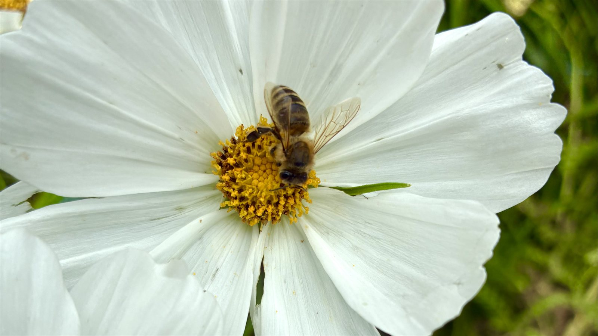

Familienimkerei · St. Johann im Pongau
Honig direkt vom Imker
Naturbelassene Bienenprodukte aus der Region — geerntet mit Sorgfalt, abgefüllt mit Liebe. Willkommen bei der BIO-Imkerei Moser.

Naturbelassen & bio
Ehrlicher Honig, so wie ihn die Bienen machen — ohne unnötige Zusätze.
Direkt vom Imker
Kein Zwischenhandel: geerntet und abgefüllt von der Familie Moser.
Aus dem Pongau
Unsere Bienenstöcke stehen in den Bergwiesen rund um St. Johann.